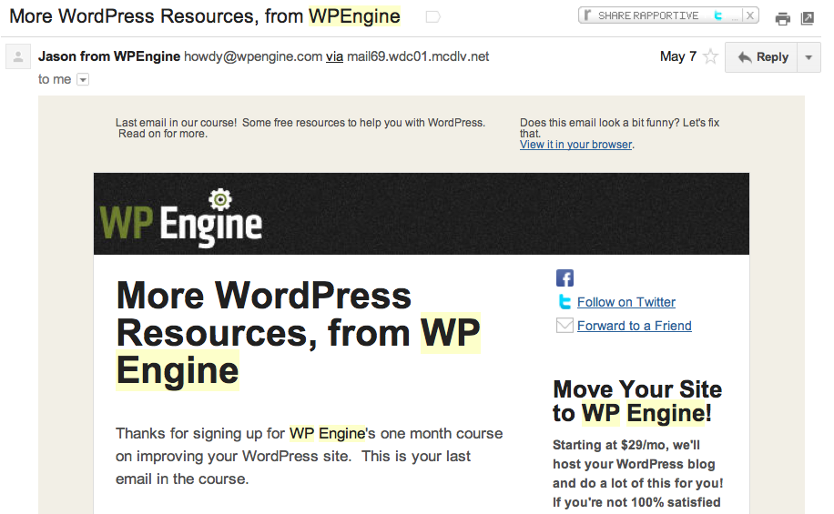

Planning out your lifecycle email campaigns can be a daunting task.
Knowing what to send and when is not a perfect science but having a framework you can use to think about your lifecycle campaigns is a powerful tool.
There are three key components to planning an end-to-end lifecycle email marketing campaign: coming up with what to send, determining when to send it and writing the copy for each campaign.
In this post we’re going to touch on each area with a focus on steps one and two: figuring out what to send and when to send it.
1. Understanding behavioural vs. newsletter campaigns
When you think email marketing the first thing that jumps into your head is probably the word ‘newsletters’.
Email newsletters have been the bread-and-butter of the industry since the late 1990s. Traditionally email marketing has consisted of uploading a list of customers, doing a little basic segmentation and hitting send. Most businesses do this monthly or weekly and some will provide daily newsletters too. Here’s an example of a newsletter featuring product updates from Mr Porter:

It’s been this way for a long time because this process works well and it provides an awesome return on investment. Having said that customers are getting savvier and businesses are responding by investing time in what is known as ‘lifecycle’ marketing.
Lifecycle marketing is all about looking at the bigger picture. It’s about putting yourself in your customers’ shoes and planning newsletter campaigns that are sent to each individual at the ‘right time’ in order to drive increased engagement and conversions.
With this in mid you should focus on both newsletters and behavioural campaigns when building a lifecycle email marketing strategy:
- Newsletters: Really important for sending product updates and other ‘one-off’ messages that will affect an entire segment at the same time. Typical uses include announcements, fixes, status updates, discounts, special offers and so on.
- Behavioral campaigns: These are campaigns triggered by some form of customer behaviour. Examples include cart abandonment (following up on customers that don’t complete a purchase), post-purchase emails, welcome emails after sign up, weekly reports and other similar campaigns. Here’s an example of a behavioural email campaign from Amazon:

You should spend time planning for both of these types of campaigns in order to maximise customer satisfaction and, in turn, conversions – you want to ensure customers are getting the right messages and are not overwhelmed.
2. Brainstorming trigger-events for automated campaigns
In this section we’re going to focus on planning your behavioural campaigns, as this is generally the area where online businesses have the least experience.
Coming up with campaigns can be tricky but focusing on customer actions and the goal of each campaign is the recommended place to start.
By focusing on which customer actions constitute a conversion (or goal) you are forced to think about your business from end-to-end.
With that in mind, the first step in the process of drafting your lifecycle campaigns is to consider you funnel. Your funnel is a map of the individual steps a customer takes from landing on your website until they ultimately take the final conversion event (subscription, purchase, etc.) Along the way your customers will take multiple actions and these may form smaller goals for your campaigns.
A good place to start is writing all of the customer actions that form the funnel in a spreadsheet. For many people this is just a matter of exporting a list of the events you track from your favourite analytics package like KISSmetrics, Mixpanel or Woopra.
Once you have clearly defined your funnel and understand the key events you should look at each step and think about it individually. If you consider that step as a ‘goal’ you should ask yourself “How can email help me move customers from the previous step towards this action?”
Take a typical eCommerce funnel, for example:
Customer arrives on site -> Views product -> Adds product to cart -> Begins checkout -> Completes checkout -> Leaves a review -> Returns to purchase
If you break these actions down and look at each as a specific goal you could come up with a bunch of different campaigns pretty quickly. Here are a few examples below (you can, of course, have multiple campaigns per goal but starting out with one campaign per goal is a great way to keep it simple):
- Goal: Adds product to cart. Track the product category each customer views. If a customer views an individual product category three or more times and doesn’t add an item to the cart you could follow up with an email containing the most popular products in this category.
- Goal: Begins checkout. You could create a trigger-based campaign that emails customers who view their cart at least once but don’t start the checkout process and remind them they ‘still have products in their cart’ and that ‘you’ve kept them aside just for them’. Link directly back to their cached cart for maximise wins.
- Goal: Completes checkout. If a customer begins checkout but doesn’t complete checkout then you could assume that they might be price sensitive or had run into an error. Following up with a series of emails offering help or a discount can help you drive customers towards this goal.
- Goal: Returns to complete checkout. If a customer purchases you could send them a follow-up email three months later asking them how their purchase is going, introducing new products in that category or reminding them to stock up. You might even change the reward or tone based on whether they previously left a review (a sign of engagement)
To help you scope out the campaigns that you can send the attached worksheet guides you through recording your key goals and adding emails alongside each one. You will see the furthest left column is all about defining the ultimate action you want your customers to take and that this is where you should start.
This spreadsheet will help you develop campaigns that will drive customers along your funnel (the most important aspect of your online business) and you will also have a good idea of the goal of each email – very important for refinement and testing. I’ve included a few SaaS campaign examples in the worksheet too, so you can see how it’s done.
After you’ve come up with some basic campaign ideas you will then have a pretty clear idea of the campaigns you’ll need to draft and setup in your favourite lifecycle email marketing tool.
RESOURCE: Worksheet
3. Brainstorming the body of your first lifecycle campaign
If you’re wondering where to begin when it comes to actually drafting your first series of emails my recommendation is to focus on developing an educational campaign.
An educational campaign is a series of emails designed to help your leads, potential customers or customers learn more about your solution and the problems it solves.
Here’s a great example of an education email from WPEngine:

The magic formula for an educational campaign seems to be 6-8 emails over a period of around 30 days. Each email should be short and informative and focus on genuinely helping the customer. You basically want to give away all your secrets, for free. You’ll be surprised how well this works at converting potential leads into customers!
Here are three steps to get started:
- Write down 6-8 topic areas on a sheet of paper. These will form the basis for your subject lines and body copy.
- Spend time working out some appealing subject lines based on these rough concepts. Don’t be afraid to reference the previous email or the fact that each email is part of a series using a pre-cursor like “Part 1” in each subject line.
- Draft up the contents of your email. I like to do this in Evernote though Draft or Google Docs are also good places to do so.
Once you’ve got the basics you’ll be in a great place to set your campaign up and get it started. When it comes to coming up with the content itself, my advice is not to get hung up on the fear that you don’t know what you’re talking about but to focus on the fact that you spend 24 hours a day, 7 days a week thinking about your business and that is 23 hours a day, 7 days a week more than most people!
Good sources of content are:
- Your most common help desk support tickets.
- Slideshows, presentations or talks you’ve given or posted online.
- Your blog, if you run one.
- eBooks that you’ve produced and distributed.
- Research from academic publications in your area (e.g. MarketingSherpa or the Harvard Business Review in the email / behavioural space).
If you’re interested in more tips on how to get started with an educational lifecycle campaign check out this post on why email marketing is about building trust.
Over to you
If you are getting started or revamping your campaigns here’s what you should do next:
- Duplicate the worksheet above (or import it into Google Docs) and clean out the contents.
- Map out the core customer actions and goals in your funnel and begin brainstorming campaign ideas around these goals.
- Include an educational campaign somewhere in the mix and start drafting this campaign as a way to get into the flow of writing good copy that will pay dividends.
If you want to see an educational email course in action, and learn more about email marketing in the process, subscribe to our free email marketing course – it’s seven emails over 30 days and you can unsubscribe any time.
Let me know your thoughts!